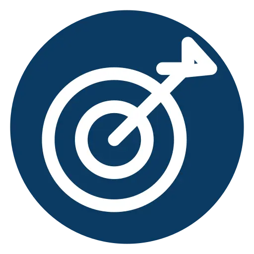

U.S. Defense Readiness
From Breakthrough
Technology to
Mission Application.
Emerging technologies often require more than a strong technical proposition to enter the U.S. defense ecosystem. USARunway helps companies evaluate mission relevance, identify the right pathways and stakeholders, and prepare for meaningful engagement in the United States.

Mission
Relevance
Identify where technology addresses real defense and security requirements.
Pathway
Development
Determine the appropriate U.S. engagement pathway, including regulatory, procurement and partnership considerations.
Strategic
Access
Connect with relevant users, partners and institutions across the defense and national security ecosystem.
Osh Agabi
Founder & CEO
Koniku
Innovation creates value when it connects to a real mission need.